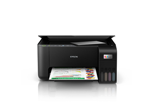
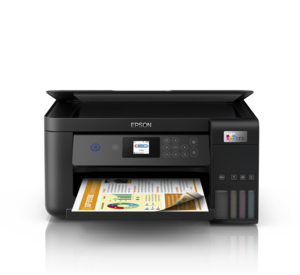
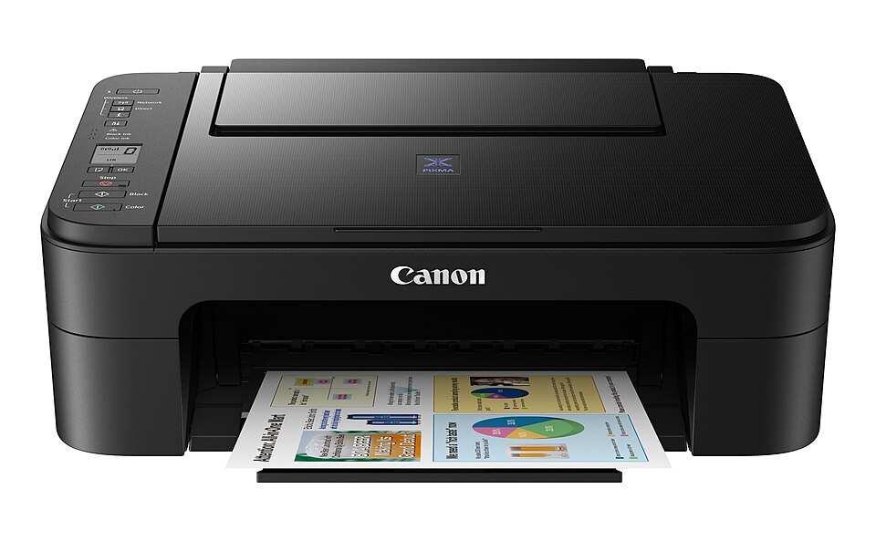

01
Assistência técnica
Diagnóstico, manutenção preventiva, reparos e correção de falhas em impressoras.
Abrir ficha técnica →Solicitar serviço →Assistência técnica, venda de impressoras, tintas, suprimentos e acessórios de informática com atendimento rápido e confiável.

EPSON L3250
EPSON L4250
CANON E3170Da manutenção à reposição de suprimentos, cuidamos de tudo para você imprimir sem preocupação.
Diagnóstico, manutenção preventiva, reparos e correção de falhas em impressoras.
Abrir ficha técnica →Solicitar serviço →Equipamentos para uso doméstico, escritório e empresas, com orientação na escolha.
Ver opções →Tintas, refis, papéis e materiais para manter sua impressora sempre funcionando.
Consultar preços →Cabos, periféricos, acessórios e soluções práticas para computadores e escritórios.
Conhecer produtos →Cadastre o cliente, descreva o procedimento e acompanhe o serviço técnico em uma só página.
Os procedimentos salvos aparecerão aqui.
Procedimentos e imagens ficam salvos neste navegador e neste endereço do site. Use sempre o mesmo endereço para acessar seu histórico.
Encontre suprimentos compatíveis, acessórios e equipamentos selecionados para o seu dia a dia.